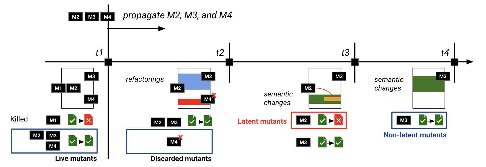

Latent Mutants and Latent faults
Latent mutants couple with real latent faults, i.e., faults that are introduced and found at different points in the projects timeline. If we assume, as suggested by previous work in mutation testing that mutants couple with real faults, then by definition latent mutant will also couple with real faults since they would be live in the faulty program version and killed by a test case that is added later in the project timeline to witness the faults.
... Another interesting aspect of latent mutants is that they co-evolve together with the evolution of the software. In some sense the study of latent mutants is the study of the software evolution and its mutants for a large part of the projects’ life-cycle.
Latent Mutants: A large-scale study on the Interplay between mutation testing and software evolution
Latent mutants are the mutants dormant at the time of introduction but later revealed in the project timeline by new failing tests, which can be modified or entirely new. We investigate the frequency and characteristics of latent mutants, building a simple prediction model. We further explore the potential benefit of predicting these mutants, e.g., technical debt reduction. We apply mutation testing in-time (acorss different commits or program versions) by generating mutants at a particular point in time and then co-evolve them alongside the software changes. Our objective is to investigate the prevalence of latent mutants and the unique characteristics that differentiate them from other types of mutants, such as those discarded or unrevealed to the end.
Related publications: arxiv
